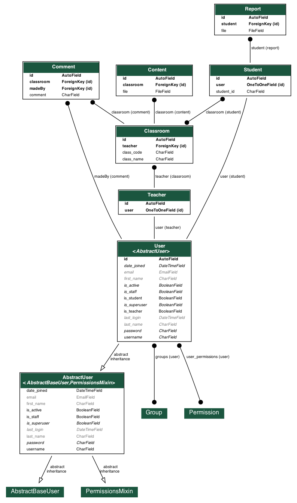

Introduction
- Purpose
This document will define the design of the PDF monitoring system named “Big Brother”. It contains specific information about the expected classes and functions. The interaction between the classes to meet the desired requirements are outlined in detailed figures at the end of the document.
- Scope
This Design Specification is to be used by Software Engineering and Software Quality Engineering as a definition of the design to be used to implement the PDF monitoring system.
- Goals and Objectives
The main purpose of this PDF monitoring system is to help all students, especially kids of age 6 to 11. The goals of the system are:
- To let the teacher know if his/her students are actually studying regularly or not
- To let the teacher know if his students are attentive or not. Since most of the time kids sit in front of screen but do other things like playing or eating. The system will detect it too.
- To make the students attentive. Because, they’ll know that the system is monitoring them.
Document Convention
NA
Description of Design Components
- Client Side
The client side of our design contains HTTPS requests from Android and Web-browsers. All requests are passed through a REST API Framework that fetches the required information and displays it through appropriate format.
- Server Side
The server side of our design contains our Django backend server. The server is a MVC type architecture where the Controller handles any incoming request from the REST API Framework, sends and then recieves information from the Models, and displays those information through a View.
- Third Party APIs
We are going to use third party APIs like Google Account to create user accounts, and OpenAI to track webcam contents. They will be called by Controller in our server.
High-Level Component Design

Class Diagrams
- Detailed Class Diagram

- Detailed Class Descriptions
- Class : Classroom
- Purpose: To store data about classroom objects
- Public Methods
- Name: getStudentList()
- Parameters: returns List
- Parameters: returns List
- Class : Classroom
Sequence Diagrams
- Use Case : Adding Students

- Use Case : Removing Students

- Use Case : Making Announcements/Comments

- Use Case : Uploading Content

- Use Case : Viewing Content

- Use Case : Generating Report

Database Design
- ER Diagram
 - Detailed Table Description
Implementation Plan
We plan to implement our project in five steps.
- Overall Design of System
This part will consist of the design of our system which includes Class Diagrams, Sequence Diagrams, ER diagrams and any relevant design protocols. As we go through our project we will encounter many difficulties and may need to update our designs as required. We will be incrementally updating and modifying our designs and design patterns after our initial design submissions.
- Backend
The next step after our design process will be to implement the backend with plenty of unit tests. This part will consist of creating Model classes which will be a challenge. We aim to have at least a basic working backend before we move onto the next phase.
- Front End
We will proceed on to create a front end for our user using frameworks like Bootstrap. We will link the backend with our front end at this point to present a working iteration of our system.
- Linking with API
This part too will be a challenge. We will aim to create a REST API which we will link with our website and Android app.
- Further Tests and Improvements
During this phase we plan to increase coverage of our unit tests. Moreover we aim to continuosly improve our system.